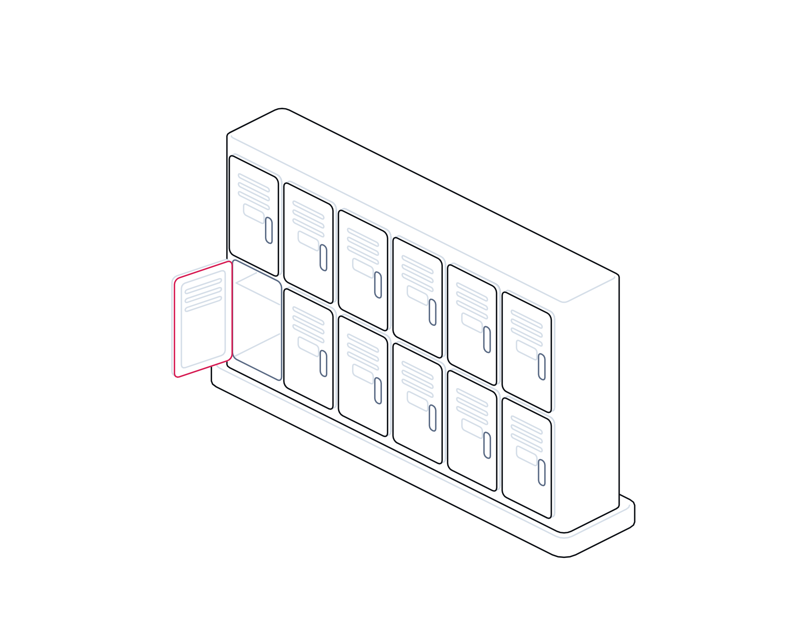

Every Resident Reached
● T+00:00 Incident declared
● T+00:02 Alert sent · push, SMS, voice
● T+01:30 Escalated · no response
● T+04:10 Team acknowledged

Crisis playbook · No. 02
Week of 16 November 2026
Property, Housing and Facilities
Every resident
reached.
Fire, flood, gas, a dead lift or a building system that stops obeying. A playbook for reaching every resident, occupier and member of staff in the first hour, including the people who cannot leave on their own.
Prepare · Communicate · Protectwww.crises-control.com
Inside
Contents
A practical playbook for landlords, managing agents and facilities teams: how to keep residents, occupiers and staff safe and informed when a building emergency starts, and how to prove afterwards that you did.
Foreword03
Introduction04
01Know your building06
02The first hour11
03Prove it16
Self-assessment and your demo25
Sources28
CRISES CONTROLContents Every Resident Reached · Crises Control · Property, Housing and Facilities02 / 29
Foreword
In a building emergency, the message is part of the safety system.
When something goes wrong in a block of flats, an office or a care setting, the physical response gets the attention: the fire service, the engineer, the shut-off valve. Yet the Grenfell Tower Inquiry found that the people affected were also failed by information. The landlord's records of residents who might need help to escape were incomplete on the night, and in the days after the fire the council had no effective system for communicating with the public.1,2
The law has moved since. Responsible persons in multi-occupied residential buildings must give residents fire safety instructions and report lift faults to the fire service. From April 2026, taller buildings and those that have switched to simultaneous evacuation need evacuation plans for residents who cannot get out unaided. Social landlords now have 24 hours to investigate and make safe emergency hazards.3,4,5
There is a newer risk too. In October and November 2026, attackers reached refrigeration controllers across Europe that had been left exposed to the internet, and the UK's National Cyber Security Centre warned that other building and heating controls could be at risk if left unprotected.6,7 A building management system that is switched off, or quietly changed, is now a credible way for an emergency to begin.
This playbook is for the people who own that first hour: housing and property managers, facilities and building safety leads, and the out-of-hours teams who pick up the phone at 3am. It is practical and vendor-neutral. Our companion intelligence report sets out the evidence and the legal detail.
The Crises Control team
Crises Control
CRISES CONTROLForeword Every Resident Reached · Crises Control · Property, Housing and Facilities03 / 29
Introduction
Three things decide whether everyone is reached.
Most failures in building emergencies are not about knowing what to do. They are about who knows, how fast they hear, and whether anyone can show later what was decided and why.
Know who is in the building
A current, consented record of residents and occupiers who may need help, with how each prefers to be contacted and who can act for them.
Reach them in minutes, not hours
Pre-approved messages for each kind of emergency, sent on more than one channel, with a way to see who has not acknowledged.
Log every decision
A single, timestamped record of what was known, what was decided, who was told and when. It protects residents first and your organisation second.
CRISES CONTROLIntroduction Every Resident Reached · Crises Control · Property, Housing and Facilities04 / 29
A plan that cannot reach the person on the ninth floor is not a plan.
Evacuation strategies, contractor rotas and BMS alarms all depend on one thing working: getting the right instruction to the right person, and knowing that it arrived.
CRISES CONTROLIntroduction Every Resident Reached · Crises Control · Property, Housing and Facilities05 / 29
Part 01
Know your
building.
Before the alarm sounds: the emergencies you will face, how serious each one is, and who lives and works inside.
01Why building emergencies are communication emergencies
02Six emergencies, six first messages
03A severity ladder for buildings
04Knowing who needs help
CRISES CONTROLPart 01 Every Resident Reached · Crises Control · Property, Housing and Facilities06 / 29
Know your building
Why building emergencies are communication emergencies
The physical emergency is only half of it. Who knows, how fast, and what they do next usually decides the harm.
Every building emergency has two parts. One is physical: a fire, a burst main, a gas escape, a stuck lift, a power cut. The other is informational: who needs to know, what they should do, and whether they have understood.
The Grenfell Tower Inquiry's findings are blunt on this. The landlord's emergency plan was out of date and incomplete, missing fire action notices were a prominent subject of residents' complaints, and its information on vulnerable residents was incomplete on the night.1 Afterwards, the council had no arrangements for identifying those forced from their homes or for communicating with them.1
Residents also notice when communication fails in ordinary times. In its review of complaints determined in 2025-26, the Housing Ombudsman found poor communication and inadequate record keeping running through its most serious repairs cases.8
The building itself is changing too. Heating, ventilation, lifts, access and pumps are increasingly run from a building management system (BMS) that a contractor can reach remotely. In October 2026 France's CERT-FR reported numerous compromises of internet-exposed refrigeration controllers.6 US agencies warned such attacks could alter settings and create fire hazards.9
No UK building management system compromise was confirmed in that wave, but the NCSC has warned that exposed controls of other kinds are at risk.7 For elderly residents, heating switched off on a January night is a welfare emergency, whatever caused it.
So the planning question is not only how to fight a fire or fix a pipe. It is how quickly you can tell everyone what to do, and how you will know who has not heard.
CRISES CONTROLKnow your building Every Resident Reached · Crises Control · Property, Housing and Facilities07 / 29
Six emergencies
Six emergencies, and what the first message must say
The first message sets the tone for everything after it. Agree the wording now, not on the night.
Emergency
First message must say
Watch for
Fire
Where it is, the current strategy and how to report a fire, matching the instructions residents already hold.3
A change of strategy. The second message matters more than the first.
Flood or escape of water
Which floors are affected, whether to isolate electrics, where to go if homes are unsafe.
Water reaching risers, lift pits and electrical intakes.
Gas
No switches or flames, open windows, leave if told to, call 0800 111 999.10
Residents who cannot leave quickly.
Lift failure
Which lifts are out, expected return, help for those who cannot use stairs.
In high-rise blocks, report firefighting lift faults not fixed in 24 hours to the fire service.3
Power failure
Scope, expected duration, what still works, welfare checks for powered medical equipment.
Door entry and warden call that depend on mains power.
BMS fault or tampering
What people will notice (heat, ventilation, access), what to report, and that the cause is being checked.
Settings that change back after a reset.
CRISES CONTROLKnow your building Every Resident Reached · Crises Control · Property, Housing and Facilities08 / 29
Severity
A severity ladder for buildings
Agree the levels in advance so the person on call does not have to decide alone. Each level names who is alerted and how.
Triggers
Fire with smoke spreading, change from stay put to evacuation, gas escape inside the building, people trapped, structural movement, or, for social landlords, an emergency hazard under Awaab's Law.
Who is alerted, how
Duty manager, building safety lead, senior leadership, every affected resident, contractors and the fire and rescue service liaison.
Voice + SMS + push, repeat until acknowledged
Triggers
Firefighting or evacuation lift out with no fix in 24 hours, loss of heating in cold weather, flood affecting electrics, unexplained BMS changes.
Who is alerted, how
Duty manager, building safety lead, contractor, residents of affected floors, welfare team for vulnerable residents.
SMS + push + email, voice for vulnerable residents
Triggers
Single lift out with another working, planned shutdown overrun, door entry fault, local leak contained.
Who is alerted, how
Duty manager, contractor, affected residents or occupiers.
SMS or push + email
Triggers
BMS alarm cleared, minor fault logged, advance notice of works.
Who is alerted, how
Building team and contractor; residents only if they will notice.
Email or app notice
CRISES CONTROLKnow your building Every Resident Reached · Crises Control · Property, Housing and Facilities09 / 29
Who lives here
Four things to know about every resident who may need help
The law requires this in blocks of 18 metres or seven storeys, and over 11 metres with simultaneous evacuation. It helps everywhere.4

01
Who and where
Residents whose ability to evacuate is compromised by an impairment or condition, with flat and floor.4
02
What help they need
Offer a person-centred fire risk assessment; agree the approach in an emergency evacuation statement.4
03
How to reach them
Preferred channel and language, and whether a carer should also be told.
04
Consent and review
Share with the fire service only with explicit consent. Review every 12 months.4
CRISES CONTROLKnow your building Every Resident Reached · Crises Control · Property, Housing and Facilities10 / 29
Part 02
The first
hour.
When the alarm sounds: who does what, what residents hear, and how to change course safely.
01A worst-day timeline
02Ready-to-send messages
03Changing the evacuation strategy
04Three scenarios
CRISES CONTROLPart 02 Every Resident Reached · Crises Control · Property, Housing and Facilities11 / 29
Worst day
Fire in a high-rise block, 02:10 on a winter night
Illustrative: a 20-storey block with a stay-put strategy and residents who need help to leave. Adapt the roles to your structure.
ClockActionOwner
T+00:00
Fire reported, 999 called
A resident calls 999 and the out-of-hours line. The incident is opened; duty manager and building safety lead alerted automatically.
Out-of-hours
T+00:08
First message to residents
Approved message to every resident: location, current strategy, how to report smoke. SMS, push and voice.
Duty manager
T+00:12
Information for the fire service
Plans and secure information box confirmed. Consented list of residents who need help ready for the incident commander.
Building safety lead
T+00:20
Strategy change
If the fire service decides to evacuate, one message goes to all residents at once. Non-acknowledgements are chased.
Duty manager
T+00:30
Vulnerable residents
Each resident on the list is reached, or reported to the incident commander as not reached.
Welfare lead
T+00:45
Contractors, holding line, log
Lift, alarm and BMS contractors called; no remote changes without approval. Holding statement issued. Log checked.
Facilities and comms
CRISES CONTROLThe first hour Every Resident Reached · Crises Control · Property, Housing and Facilities12 / 29
Templates
Six messages to approve before you need them
Short, specific and written for the person reading at 2am. Keep SMS under 160 characters and send the same instruction on every channel.
SMS · Residents133 chars
FIRE at Lowry House, floor 9. Stay in your flat unless fire or smoke affects it. If it does, get out and call 999. Updates to follow.
Only while the strategy is stay put.
SMS · Residents132 chars
Lowry House: LEAVE THE BUILDING NOW by the stairs. Do not use lifts. If you cannot get out, call 999 and tell them your flat number.
Strategy change. Voice call anyone who has not acknowledged.
Voice · Vulnerable residents
This is Northgate Housing. There is a fire at Lowry House. The fire service know you may need help. Keep your front door shut and press 1 to confirm you heard this.
Only say the fire service know if they do.
SMS · Occupiers and staff130 chars
Gas escape reported at Quay Building. Do not use switches or flames. Leave now by the nearest exit and meet at the front car park.
Fire wardens confirm floors are clear.
Email · Contractors
Incident at Lowry House from 02:10. Make no remote changes to BMS, lift or alarm settings until the duty manager confirms. If on call, attend and report to the incident lead.
Stops resets that destroy evidence.
Holding line · Media and families
We are working with the fire service at Lowry House. Residents' safety is our priority. We will update this statement at 04:00.
No speculation on cause or casualties.
CRISES CONTROLThe first hour Every Resident Reached · Crises Control · Property, Housing and Facilities13 / 29
Strategy change
Changing from stay put to evacuation
The decision belongs to the fire and rescue service. Your job is to make it reach every resident within minutes. The Grenfell Tower Inquiry criticised the absence of contingency plans for a full evacuation.1
Hear it once, clearly
Agree in advance how the incident commander's decision reaches your duty manager, and who is allowed to trigger the evacuation message.
Send to everyone, on every channel
One pre-approved instruction, by SMS, push and voice, to every resident and visitor on record. Building alarm systems where fitted.
Watch who has not responded
Non-acknowledgements are not silence. Pass the list of flats not reached to the incident commander, floor by floor.
Prioritise those who need help
Residents with evacuation statements are contacted individually and their status reported, using the information already shared with consent.
Log the change
Time of decision, time of message, numbers reached and not reached. This is the record an inquiry, regulator or court will ask for.
Test the strategy-change message at least once a year, with the fire safety instructions you give residents every 12 months.
CRISES CONTROLThe first hour Every Resident Reached · Crises Control · Property, Housing and Facilities14 / 29
In practice
Three buildings, three bad nights
Supported housing, 40 flats
Burst tank floods the plant room at 23:00
The risk
Power, lift and warden call fail. Some residents use powered medical equipment.
The response
SEV 2. Voice calls to all, welfare checks, contractor and network operator called.
The proof
Log shows every resident reached within 40 minutes.
Watch out
Know what fails when the power goes.
Office campus, 1,200 staff
Heating and ventilation settings change overnight
The risk
BMS setpoints altered remotely; laboratory ventilation switched off.
The response
Treated as tampering. Remote access cut, settings recorded before reset, staff told.
The proof
Log and contractor access records shared with security and the insurer.
Watch out
A reset alone is not enough if the device stays exposed.6
General needs tower, 18 storeys
Both lifts fail on a Friday evening
The risk
Residents with limited mobility stranded. One is the firefighting lift.
The response
Fire service told when the fault ran past 24 hours, and when fixed.3
The proof
Monthly lift check records available to residents.
Watch out
By day two a lift outage is a welfare issue.
CRISES CONTROLThe first hour Every Resident Reached · Crises Control · Property, Housing and Facilities15 / 29
Part 03
Prove
it.
After the first hour: contractors and nights, a record you can stand behind, and the plan for the next 90 days.
01Who answers at 3am
02A decision log you can defend
03Week, month, quarter
CRISES CONTROLPart 03 Every Resident Reached · Crises Control · Property, Housing and Facilities16 / 29
Out of hours
Who answers at 3am: five arrangements to settle now
Most building emergencies start outside office hours. The weakest link is usually the hand-off between your on-call team and a contractor's.
01
One number, one owner
A single out-of-hours route, a named duty manager and a deputy called automatically if the first does not respond.
02
Contractor contacts that work
Named 24/7 contacts for alarm, lift, BMS, gas, electrical and water contractors, tested quarterly.
03
Remote access rules
No remote changes during an incident without approval. Remote access only through secured connections.6,9
04
Information to hand
Floor plans and the consented list of residents who need help, available away from the office.3,4
05
Who reports to whom
Who tells the fire service, council and insurers, and who decides if a safety occurrence goes to the Building Safety Regulator.11
CRISES CONTROLProve it Every Resident Reached · Crises Control · Property, Housing and Facilities17 / 29
Decision log
A decision log you can defend
Social landlords must now give tenants a written summary of investigation findings and keep them informed of progress.5 A good log makes that easy.
Area
What often happens
What good looks like
Timing
Times reconstructed from memory and phone records days later.
Every alert, call and decision timestamped automatically as it happens.
Who was told
"We messaged the residents" with no list.
Recipients, channel, delivery and acknowledgement for every message.
Decisions
Actions recorded, reasons lost.
What was known, what was decided, by whom and why, in one place.
Vulnerable residents
A spreadsheet checked if someone remembers.
Each person's status recorded: reached, visited, passed to the fire service.
Contractors
Calls on personal phones, not recorded.
Who was called, when they arrived, what they changed.
Afterwards
A report written from scattered emails.
A timeline ready for the debrief, the Ombudsman or the regulator.
CRISES CONTROLProve it Every Resident Reached · Crises Control · Property, Housing and Facilities18 / 29
Your plan
This week, this month, this quarter
Owners are suggestions. Adjust them to your structure and building portfolio.
This week
Check every out-of-hours contact and escalation route. Confirm contractors' 24/7 numbers. Find any BMS, lift or plant controller reachable from the internet.
Duty manager rota lead
This week
Draft and approve the six message templates. Confirm who may send an evacuation message.
Head of housing or facilities
This month
Audit records of residents who may need help: consent, contact preference, flat and floor. Confirm what the fire service holds.
Building safety lead
This month
Remove internet exposure of building controls, change default passwords and agree remote access rules with contractors.
Facilities and IT
This quarter
Run a night-time exercise including a strategy change and a BMS fault. Measure time to reach every resident.
Building safety lead
This quarter
Review Awaab's Law response times, the decision log and, for higher-risk buildings, the residents' engagement strategy.12 Report to the board.
Director of property
CRISES CONTROLProve it Every Resident Reached · Crises Control · Property, Housing and Facilities19 / 29
For leaders
Questions for your leadership team
Ask them out loud. Vague answers are the finding.
Reach
?If we had to evacuate our tallest block tonight, how long would it take to reach every resident, and how would we know who we had missed?
?Do we know, for every building, which residents need help to leave, and does the fire service have that information with their consent?
?Who decides, at 3am, that an incident is SEV 1?
Control and proof
?Which of our building systems can be reached from the internet, and who can change them?
?Could we produce a timed record of every message and decision from our last incident within a day?
?Are we meeting the 24-hour emergency hazard timescale today, and how do we know?
CRISES CONTROLProve it Every Resident Reached · Crises Control · Property, Housing and Facilities20 / 29
Checklist
Can you reach every resident?
Tick what is true today. Anything blank is your next action.
One out-of-hours route with automatic escalation
Tested in the last three months.
Six approved message templates
Including a stay put to evacuation change and a holding line.
Consented records of residents who need help
With flat, floor, contact preference and review date.
Fire safety instructions issued to every resident
To new residents promptly and to everyone every 12 months.3
Contractor 24/7 contacts and remote access rules
No exposed controllers, no default passwords.
24-hour emergency hazard process
Investigation and safety work within 24 hours of becoming aware.5,13
Decision log in use
Every incident, timestamped, with recipients and acknowledgements.
Night-time exercise in the last year
Including vulnerable residents and a strategy change.
CRISES CONTROLProve it Every Resident Reached · Crises Control · Property, Housing and Facilities21 / 29
Glossary
Words worth knowing
Responsible person
The person with duties under the Fire Safety Order for the common parts of a building, usually the landlord or managing agent.14
Accountable person
Under the Building Safety Act, a person who holds a legal estate in, or has a repairing obligation for, any part of the common parts of a higher-risk building.
Higher-risk building
In occupation, a building at least 18 metres or seven storeys tall with at least two residential units.
Stay put
A strategy in which residents not affected by fire or smoke remain in their flats, relying on compartmentation.
Simultaneous evacuation
Everyone leaves at once when the alarm sounds or when told to.
Residential PEEP
A personal emergency evacuation plan for a resident who cannot evacuate unaided, recorded as an emergency evacuation statement.
Secure information box
A box on site holding plans and contact details for the fire and rescue service.
Emergency hazard
Under Awaab's Law, a hazard posing an imminent and significant risk of harm that a reasonable landlord would make safe within 24 hours.
BMS
Building management system: the controls that run heating, ventilation, lighting, pumps and sometimes access and lifts.
Safety occurrence
An incident or situation relating to fire spread or structural integrity in a higher-risk building that must be reported to the regulator.
CRISES CONTROLGlossary Every Resident Reached · Crises Control · Property, Housing and Facilities22 / 29
Why coordination, not just notification
Alerting is minute one.
Coordination is everything after.
When a fire alarm sounds in a high-rise at 02:10, a text to residents is minute one. Keeping everyone safe depends on which residents need help, which contractor is on the way, who changed the evacuation strategy, and a record you can stand behind later.
01 · Alert
Ping
Reach people on push, SMS, voice and email, and track who acknowledged.
02 · Coordinate
Incident Manager
One workspace and log for the whole team.
03 · Execute
Task Manager
Procedures become owned tasks with deadlines and escalation.
04 · See
Control Centre
A live picture of tasks, people, locations and blockers.
05 · Prove
Audit Trail
A timestamped timeline, ready for the post-incident report.
A mass notification tool
An Operational Incident Coordination Platform
Sends a message
Runs the response, from first alert to recovery
Knows the message was delivered
Knows who acknowledged, and escalates silence
Ends when the alert goes out
Follows the incident with tasks, owners and deadlines
Leaves the record in inboxes and chats
Keeps one timestamped timeline you can hand over
Gives leaders a list of recipients
Gives leaders a live picture of what is happening
Crises Control is an Operational Incident Coordination Platform. Mass alerting is where it starts, not where it ends.
CRISES CONTROLCoordination, not just notification Every Resident Reached · Crises Control · Property, Housing and Facilities23 / 29
Platform
Where Crises Control fits
The steps in this playbook, mapped to the Crises Control modules that support them.
Send the evacuation or stay-put message to every resident on SMS, voice and push, and chase anyone who has not acknowledged.
Ping
Mass alerting by push, SMS, voice and email, with acknowledgement tracking and escalation on no response.
Open one workspace per incident, with approved templates and a single communication log for the duty manager and partners.
Incident Manager
A workspace per incident: team coordination, a single communication log and message templates.
Turn the out-of-hours procedure into assigned tasks for the welfare lead, facilities and contractors, with deadlines and escalation.
Task Manager
Digitised procedures: tasks assigned with owners, deadlines and escalation paths.
See which floors and residents have been reached, which tasks are open and what has escalated, in one live view.
Control Centre
A live view of tasks, communications, locations and escalations.
Keep a timestamped record of every message, decision and acknowledgement, ready for the debrief or the regulator.
Audit Trail
Automatic timestamps and incident timelines, ready for the post-incident report.
Let concierge, wardens and caretakers raise an alarm with their location in one touch.
SOS
One-touch mobile escalation with GPS location for frontline staff.
Draft resident updates quickly and translate them into the languages your residents use.
CRAiG
AI assistant (beta) that drafts role-specific messages, translates and summarises.
CRISES CONTROLWhere Crises Control fits Every Resident Reached · Crises Control · Property, Housing and Facilities24 / 29
Self-assessment
How coordinated is your response?
Score each area from 0 (not in place) to 3 (fully in place) for your property and housing organisation, then add up the total.
AreaThe questionScore 0 to 3
Can you reach the right people on more than one channel within minutes, day or night?
GOOD LOOKS LIKE Residents, staff and contractors reached on several channels, including people without smartphones.
Do you know who has seen the alert, and does silence trigger escalation automatically?
GOOD LOOKS LIKE Acknowledgement tracked by block and by flat; vulnerable residents followed up first.
Are escalation paths set by role and time, not by whoever remembers who to call?
GOOD LOOKS LIKE Out-of-hours escalation to the duty manager and contractor is automatic.
Is there one shared workspace and log for the incident, not scattered calls, chats and inboxes?
GOOD LOOKS LIKE One log for the incident, shared by housing, repairs, the fire service liaison and communications.
Are your procedures turned into owned tasks with deadlines that someone can track?
GOOD LOOKS LIKE Awaab's Law and fire safety actions run as tasks with owners and deadlines.
Can leaders see tasks, people, locations and blockers live, without having to ask?
GOOD LOOKS LIKE A live view of buildings, residents contacted and jobs outstanding.
Could you produce a timestamped timeline for a regulator, insurer or inquiry within a day?
GOOD LOOKS LIKE A defensible, timestamped record of every decision and message.
Do you exercise the whole response, not just the call tree, at least once a year?
GOOD LOOKS LIKE Night-time scenarios rehearsed, including a change from stay put to evacuation.
0 to 8
Alerting only
You can send messages. The response still depends on people and luck.
9 to 16
Coordinating in parts
Some steps work. Gaps appear at night, at scale or when systems fail.
17 to 24
Coordinated and provable
You can run the response and show exactly what happened.
CRISES CONTROLSelf-assessment Every Resident Reached · Crises Control · Property, Housing and Facilities25 / 29
Buyer's guide
Eight questions to ask any incident platform supplier
Many tools can send an alert. These questions separate a notification tool from a platform that coordinates the whole response.
01
Does it stop at the message?
Ask what the platform does after the alert is sent: tasks, log, escalation, recovery.
02
Can it prove who acknowledged?
Delivery is not acknowledgement. Ask how silence is detected and escalated.
03
Does it run your procedures?
Ask whether your plans become owned tasks with deadlines, or stay as documents.
04
Is there one shared picture?
Ask what leaders see live, and whether it needs someone to update a spreadsheet.
05
Does it work when your systems do not?
Ask how teams coordinate if email, chat or your network is down.
06
Can frontline staff raise the alarm?
Ask how a colleague on site escalates, with their location, in one action.
07
What evidence does it leave behind?
Ask for a sample timeline of the kind a regulator, insurer or inquiry would want.
08
Can you rehearse in it?
Ask whether you can run exercises on the same platform you would use for real.
CRISES CONTROLBuyer's guide Every Resident Reached · Crises Control · Property, Housing and Facilities26 / 29
Your tailored demonstration
Bring your worst day.
We will run it with you.
A 30-minute session built around your own property and housing scenario, not a standard product tour. You leave with a clearer view of your gaps, whether or not you go on to use Crises Control.
Bring a scenario like
01A night-time fire in a high-rise block where the evacuation strategy changes.
02A flood, gas leak or power failure that affects vulnerable residents.
03A building management system fault or tampering incident that needs contractors at 3am.
What the 30 minutes covers
05 minWe agree your scenario and the people involved.
10 minWe run your first hour live: alert, acknowledgement and escalation.
10 minWe turn your procedure into tasks and show the live picture leaders would see.
05 minWe produce the timeline and talk through what it means for your plans.
Request your tailored demo
+44 (0) 20 8584 1385
contactus@crises-control.com
www.crises-control.com
Request a demo
CRISES CONTROLYour tailored demonstration Every Resident Reached · Crises Control · Property, Housing and Facilities27 / 29
Sources
Sources and notes
Sources were accessed in November 2026. Legal duties are summarised; read the regulations and official guidance for the full requirements. Building and organisation names in the examples are fictional.
01
Grenfell Tower Inquiry, Phase 2 Report, Volume 1, Chapter 2 (executive summary), HC 19-I, 4 September 2024, published on gov.uk
02
Grenfell Tower Inquiry, Phase 2 Report, Volume 7, Chapter 113 (recommendations), 4 September 2024, published on gov.uk
03
Fire Safety (England) Regulations 2022 (SI 2022/547), regs 4 to 10, https://www.legislation.gov.uk/uksi/2022/547/made
04
Fire Safety (Residential Evacuation Plans) (England) Regulations 2025 (SI 2025/797), https://www.legislation.gov.uk/uksi/2025/797/made
05
Hazards in Social Housing (Prescribed Requirements) (England) Regulations 2025 (SI 2025/1042), https://www.legislation.gov.uk/uksi/2025/1042/made
06
CERT-FR, Alert CERTFR-2026-ALE-012 on refrigeration remote controllers, 12 October 2026 (updated 16 October), https://cert.cyber.gouv.fr/alerte/CERTFR-2026-ALE-012/
07
The Record, British businesses caught in Europe-wide supermarket fridge attacks, 3 November 2026, therecord.media
08
Housing Ombudsman, Annual Complaints Review 2025-26, 2026, housing-ombudsman.org.uk
09
CISA, FBI and partners, Urge Hardening Industrial Refrigeration and Cold Chain Monitoring Systems, 5 November 2026, https://www.ic3.gov/CSA/2026/261105.pdf
10
National Gas, Emergency contacts, https://nationalgas.com/emergency-contacts
11
Building Safety Act 2022, section 87 (mandatory occurrence reporting), https://www.legislation.gov.uk/ukpga/2022/30/section/87
12
Building Safety Act 2022, section 91 (residents' engagement strategy), https://www.legislation.gov.uk/ukpga/2022/30/section/91
13
MHCLG, Awaab's Law: Phase 2 guidance for social landlords, updated 31 July 2026, gov.uk/government/publications/awaabs-law-phase-2-guidance-for-social-housing-landlords
14
Regulatory Reform (Fire Safety) Order 2005 (SI 2005/1541), https://www.legislation.gov.uk/uksi/2005/1541/contents
CRISES CONTROLSources Every Resident Reached · Crises Control · Property, Housing and Facilities28 / 29
Reach every resident,
every time.
Crises Control helps landlords, managing agents and facilities teams alert residents, occupiers, staff and contractors in seconds, track who has responded and keep a complete record of every decision.
Crises Control is an Operational Incident Coordination Platform: alert, coordinate, execute, see and prove, in one place.
Request a tailored demowww.crises-control.com
+44 (0) 20 8584 1385 · contactus@crises-control.com · www.crises-control.com
Read the companion report
Intelligence report No. 02 · Safe homes, clear duties
Crises Control · Crisis playbook No. 02